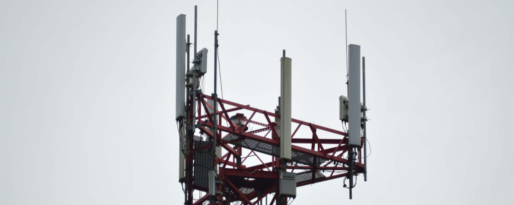

| 234,230,000 | |
| 145,395,000 | |
| 3,500,000 | |
| 860,000,000 | |
| 234,450,000 | |
| 234,456,346 | |
| 234,230,000 | |
| 145,395,000 | |
| 3,500,000 | |
| 860,000,000 | |
| 254,354,000 | |
| 234,450,100 | |
| 234,230,000 | |
| 145,395,000 | |
| 3,500,000 | |
| 860,000,000 | |
| 234,352,150 | |
| 534,250,000 | |
| 234,230,000 | |
| 145,395,000 | |
| 3,500,000 | |
| 1,099,000,000 | |
| 434,450,000 | |
| 234,456,000 | |
| 234,230,000 | |
| 145,395,000 | |
| 3,500,000 | |
| 2,400,000,000 | |
| 5,875,000,000 | |
| 734,450,000 | |
| 234,230,000 | |
| 145,395,000 | |
| 3,500,000 | |
| 360,000,000 | |
| 106,500,000 | |
| 95,300,000 |
VHF
2 Meter
The Electro-magnetic spectrum

Everywhere you go, there are countless radio waves, whizzing by, carrying payloads of information: AM and FM broadcasts, emergency communications or just families using hand held radios. Wouldn’t you like to see where all the interesting things are happening on the radio waves in your area? GeoRF has all the information you need to become familiar with the EM spectrum and the tools to find where you can find interesting things and perhaps even listen in.

Radios have both gotten smaller and more capable over time. Something like this would have a weak signal and very limited frequency range.